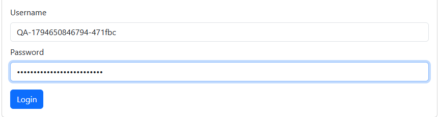

Inżynieria testów oprogramowania · projekt zespołowy
Restful-Booker-Platform – projekt testowy
/{id}) zwracają HTTP 500 (DEF-01, S1/P1), co uniemożliwia otwarcie strony rezerwacji i zarezerwowanie pokoju. Zmaterializowało się ryzyko o najwyższej ocenie (R-01, P×I = 9); kryterium GO (brak otwartych S1/S2 w kluczowym zakresie) nie jest spełnione.| Osoba | Nr albumu | Rola | Rozdział |
|---|---|---|---|
| Kamil Andrzejewski | 83741 | test lead i koordynacja (ryzyka, spójność artefaktów, rekomendacja) | 1, 5 |
| Karol Myszkowski | 77514 | projekt testów (przypadki, techniki EP/BVA/DT) | 2 |
| Kacper Walkowiak | 77519 | wykonanie testów, evidence i defekty | 3 |
| Mateusz Krzyzak | 77862 | API i automatyzacja | 4 |
Plan testów i analiza ryzyka
Kamil Andrzejewski · test lead i koordynacja (ryzyka, spójność artefaktów, rekomendacja)
Przedmiot i cel testów
Restful-Booker-Platform to aplikacja pensjonatu: frontend Next.js wystawia publiczne proxy /api/* przed usługami Spring (room, booking, message, auth). Testujemy publiczne wdrożenie (UI v2.2, commit wdrożenia nieznany), a kontrakty weryfikujemy względem kodu referencyjnego z oficjalnego repozytorium (supporting/sources).
Cel: ocenić, czy gość może znaleźć i zarezerwować pokój, czy dane wejściowe są poprawnie walidowane i czy dostęp administracyjny jest chroniony – oraz wydać rekomendację opartą na śledzalnych wynikach.
Zakres IN
- Katalog pokoi, szczegóły pokoju, dostępność i daty, cena pobytu
- Rezerwacja: dane gościa, payload, zapis
- Formularz kontaktowy: wymagane pola, format i typ danych, długości pól
- API: room, message, booking, auth – odczyt, tworzenie, modyfikacja, usuwanie własnych rekordów
- Kontrola dostępu: brak tokenu, błędne dane logowania, nieważna sesja
Zakres OUT
- Wydajność i obciążenie (publiczna instancja szkoleniowa)
- Testy penetracyjne, płatności, SLA
- Pełna macierz przeglądarek i urządzeń mobilnych, audyt dostępności
- Modyfikacje cudzych danych, pełna regresja panelu administratora
Środowisko i kryteria
| Element | Wartość |
|---|---|
| Platforma | Windows 11, Google Chrome 157 (desktop 1440×1000), strefa Europe/Warsaw; w eksploracji także UTC i UTC+14 |
| Narzędzia | Playwright 1.62.1 + TypeScript (UI i API), Node.js 22; raporty HTML, JSON, JUnit; evidence JSON i screeny kroków |
| Kryteria wejścia | Dostępna strona i lista pokoi, rozpoznany kontrakt operacji, przypadki z danymi i oczekiwaniami, możliwość zapisu evidence; testy zapisu wymagają konta szkoleniowego |
| Kryteria zakończenia | Każdy TC ma status PASS/FAIL/BLOCKED/NOT RUN z uzasadnieniem, defekty i ryzyka zapisane, metryki zgodne z runnerem |
| Kryterium GO | Brak otwartych defektów S1/S2 w kluczowym zakresie, potwierdzona rezerwacja i krytyczne zależności |
Analiza ryzyka
Każde ryzyko oceniono w skali 1–3 dla prawdopodobieństwa (P) i wpływu (I); poziom = P × I (6–9 wysokie, 3–4 średnie, 1–2 niskie). Ryzyka o wpływie 3 (rezerwacja, uprawnienia, daty) i niezbędne zależności procesu dostały priorytet P1; lokalna walidacja kontaktu i katalog – P2. Przy równym P×I pierwszeństwo ma wyższy wpływ.
| ID | Obszar | Ryzyko | P | I | P×I | Wpływ na priorytet testów | Przypadki |
|---|---|---|---|---|---|---|---|
| R-01 | Rezerwacja | Gość nie może otworzyć formularza lub zakończyć rezerwacji mimo dostępnego pokoju. | 3 | 3 | 9 wysokie | Główny cel biznesowy B&B. Najpierw testy P1 dostępności, szczegółów i cyklu rezerwacji. | UI-08, UI-09, UI-10, UI-12, API-02, API-10 |
| R-04 | Uprawnienia | Osoba bez poprawnego konta uzyskuje dostęp do rezerwacji lub operacji administracyjnych. | 2 | 3 | 6 wysokie | Dane gości i stan administracyjny wymagają kontroli dostępu. Negatywne testy P1. | UI-11, API-07, API-08, API-09, API-10 |
| R-05 | Daty i naliczenia | Wybrany okres zmienia się pomiędzy UI, requestem i rezerwacją albo cena używa złej liczby nocy. | 2 | 3 | 6 wysokie | Błąd daty lub ceny dotyka terminu pobytu i płatności. Weryfikacja w strefie Europe/Warsaw. | UI-08, UI-10, UI-12 |
| R-03 | Walidacja danych | Puste, za krótkie lub źle typowane dane są akceptowane albo powodują błąd serwera. | 3 | 2 | 6 wysokie | P2 dla lokalnej walidacji kontaktu (I=2); przy tym samym P×I wyższy wpływ I=3 rezerwacji i uprawnień daje P1. EP/BVA/DT ograniczają ryzyko błędnego zapisu. | UI-02, UI-03, UI-04, UI-05, UI-06, UI-07, UI-09, API-04, API-05, API-06, API-09 |
| R-06 | Stan i izolacja | Reset usuwa dane w połowie testu; awaria sprzątania pozostawia rekordy; współbieżny użytkownik zmienia stan. | 3 | 2 | 6 wysokie | Ryzyko przekrojowe: świeży stan, jeden worker, markery QA i cleanup w każdym teście zapisu. Priorytet przypadku wynika z procesu: rezerwacja P1, kontakt P2. | UI-02, UI-06, API-09, API-10 |
| R-02 | Katalog | Lista, szczegóły i ceny pokoju są niespójne lub błędnie obsługują brak zasobu. | 2 | 2 | 4 średnie | Błędna oferta utrudnia wybór; szczegóły są też zależnością rezerwacji. | UI-01, API-01, API-02, API-03 |
Założenia i ograniczenia
- Instancja jest publiczna, współdzielona i okresowo resetowana – identyfikatory, stan i token pobieramy na nowo w każdym teście; brak stałych ID.
- Tworzymy wyłącznie własne, syntetyczne rekordy z unikalnym znacznikiem QA i próbujemy usuwać tylko je.
- Brak dostępu do logów backendu; limity BVA pochodzą z modelu
Messagei komunikatów walidacji, a nieudokumentowane reguły dat traktujemy jako pytania, nie wymagania.
Projekt testów i testy eksploracyjne
Karol Myszkowski · projekt testów (przypadki, techniki EP/BVA/DT)
Struktura zestawu
| UI / E2E | API | Razem | Minimum | |
|---|---|---|---|---|
| Przypadki | 12 | 10 | 22 | 20 (≥ 12 UI, ≥ 6 API) |
| Pozytywne | 6 | 4 | 10 | – |
| Negatywne | 6 | 6 | 12 | 6 |
| Priorytet P1 | 5 | 5 | 10 | – |
Każdy przypadek zawiera ID, cel, priorytet, powiązane ryzyko, warunki wstępne, dane testowe, kroki, oczekiwany rezultat, a po wykonaniu rzeczywisty rezultat, status, evidence i powiązany defekt (02_TestCases.md).
Techniki projektowania
EP – klasy równoważności
| Obszar | Klasa | TC |
|---|---|---|
| poprawny | UI-02 | |
| zły format | UI-04, API-05 | |
| zły typ (obiekt JSON) | API-06 | |
| Pola wymagane | brak danych | UI-03, API-04 |
| Pokój | ID z listy / spoza listy | API-02 / API-03 |
| Dostęp | brak tokenu / błędne dane | API-07 / API-08, UI-11 |
Zły format i zły typ to osobne klasy – system reaguje na nie odpowiednio 400 i 500.
BVA – wartości brzegowe
| Pole | min−1 | min | max | max+1 |
|---|---|---|---|---|
| Temat 5–100 | 4 → 400 UI-05 | 5 → 200 UI-06 | 100 → 200 | 101 → 400 |
| Telefon 11–21 | 10 → 400 UI-07 | 11 → 200 UI-02 | 21 → 200 | 22 → 400 |
| Opis 20–2000 | 19 → 400 | 20 → 200 | 2000 → 200 | 2001 → 400 |
Dolne granice w TC; granice górne i pole opisu w sesji EXP-02. Limity z adnotacji @Size modelu Message.
DT – tablica decyzyjna
| Warunek | R1 | R2 | R3 | R4 |
|---|---|---|---|---|
| Email poprawny | T | T | N | N |
| Temat poprawny | T | N | T | N |
| Oczekiwany HTTP | 200 | 400 | 400 | 400 |
| TC | UI-02 | UI-05 | UI-04 | UI-04 |
Druga tablica (kontrola dostępu: brak / błędny / pusty / poprawny token) – w sesji eksploracyjnej.
Uzupełniająco: testy przejść stanu (API-09, API-10: utworzenie → odczyt → modyfikacja → usunięcie z potwierdzeniem każdego stanu), porównanie interfejsów (UI-01: katalog w UI zgodny z GET /api/room) i spójność danych UI → request (UI-10, UI-12: daty wybrane w UI = parametry wysłane do API).
Przykład przypadku testowego
| Pole | Wartość |
|---|---|
| ID / nazwa | UI-05 – Temat 4 znaki poniżej minimum |
| Priorytet / ryzyko / technika | P2 / R-03 / BVA: min-1; DT reguła 2 |
| Warunki wstępne | Publiczna instancja dostępna. Nowy, izolowany kontekst. Brak wymagania stałych ID; pokoje pobierz z aktualnej listy. |
| Dane testowe | Name=unikalny QA-<czas>-<losowe>; Email=qa-project@example.test; Phone=12345678901 (11 znaków); Subject=Zapytanie <marker>; Message=Wiadomość testowa projektu akademickiego. Dane syntetyczne. Subject=ABCD (4 znaki). |
| Kroki |
|
| Oczekiwany rezultat | HTTP 400; temat poniżej limitu odrzucony; widoczny komunikat. |
| Rzeczywisty rezultat | POST /api/message → 400 Wszystkie jawne asercje i kontrole runnera zakończone pomyślnie. |
| Status | PASS |
 UI-05 · krok 1 – Temat „ABCD” (4 znaki, min. 5), pozostałe pola poprawne
UI-05 · krok 1 – Temat „ABCD” (4 znaki, min. 5), pozostałe pola poprawne UI-05 · krok 2 – Odrzucenie (HTTP 400): „Subject must be between 5 and 100 characters.”
UI-05 · krok 2 – Odrzucenie (HTTP 400): „Subject must be between 5 and 100 characters.”Lista przypadków
| ID | Nazwa | Typ | Charakter | Prio | Ryzyko | Technika | Status | Defekt |
|---|---|---|---|---|---|---|---|---|
| UI-01 | Katalog pokoi zgodny z aktualnym API | UI | Pozytywny | P2 | R-02 | Porównanie między interfejsami | PASS | – |
| UI-02 | Wysłanie poprawnej wiadomości kontaktowej | UI | Pozytywny | P2 | R-03,R-06 | EP; DT reguła 1; BVA telefon=11 | PASS | – |
| UI-03 | Pusty formularz kontaktowy | UI | Negatywny | P2 | R-03 | EP: brak wymaganych danych | PASS | – |
| UI-04 | Email niepoprawny i kombinacja dwóch błędów | UI | Negatywny | P2 | R-03 | EP; DT reguły 3 i 4 | PASS | – |
| UI-05 | Temat 4 znaki poniżej minimum | UI | Negatywny | P2 | R-03 | BVA: min-1; DT reguła 2 | PASS | – |
| UI-06 | Temat 5 znaków na dolnej granicy | UI | Pozytywny | P2 | R-03,R-06 | BVA: min; EP: poprawne dane | PASS | – |
| UI-07 | Telefon 10 znaków poniżej minimum | UI | Negatywny | P2 | R-03 | BVA: min-1 | PASS | – |
| UI-08 | Cena rezerwacji dwóch nocy | UI | Pozytywny | P1 | R-01,R-05 | Reguła biznesowa / obliczenie ceny | BLOCKED | DEF-01 |
| UI-09 | Rezerwacja z pustymi danymi gościa | UI | Negatywny | P1 | R-01,R-03 | EP: puste dane obowiązkowe | BLOCKED | DEF-01 |
| UI-10 | Daty payloadu rezerwacji zgodne z wyborem | UI | Pozytywny | P1 | R-01,R-05 | Spójność danych UI→request | BLOCKED | DEF-01 |
| UI-11 | Odrzucenie błędnego logowania administratora | UI | Negatywny | P1 | R-04 | EP: niepoprawne credentials | PASS | – |
| UI-12 | Wyszukanie dostępności w poprawnym okresie | UI | Pozytywny | P1 | R-01,R-05 | Spójność parametrów i odpowiedzi | PASS | – |
| API-01 | Lista pokoi: schemat, ceny i ID | API | Pozytywny | P2 | R-02 | Walidacja kontraktu | PASS | – |
| API-02 | Odczyt szczegółów istniejącego pokoju | API | Pozytywny | P1 | R-01,R-02 | Spójność listy i szczegółów | FAIL | DEF-01 |
| API-03 | Nieistniejący pokój | API | Negatywny | P2 | R-02 | EP: zasób nieistniejący | FAIL | DEF-01 |
| API-04 | Wiadomość bez wymaganych pól | API | Negatywny | P2 | R-03 | EP: brak pól | PASS | – |
| API-05 | Niepoprawny format email | API | Negatywny | P2 | R-03 | EP: niepoprawny format | PASS | – |
| API-06 | Email jako obiekt JSON zamiast tekstu | API | Negatywny | P2 | R-03 | EP: błędny typ | FAIL | DEF-02 |
| API-07 | Odczyt rezerwacji bez tokenu | API | Negatywny | P1 | R-04 | EP: brak uwierzytelnienia | PASS | – |
| API-08 | Niepoprawne credentials | API | Negatywny | P1 | R-04 | EP: odrzucenie dostępu | PASS | – |
| API-09 | Wiadomość: create/read/update i sprzątanie | API | Pozytywny | P1 | R-03,R-04,R-06 | Test przejść stanu CRUD | FAIL | DEF-01 |
| API-10 | Rezerwacja: create/read/update i sprzątanie | API | Pozytywny | P1 | R-01,R-04,R-06 | Test przejść stanu CRUD | FAIL | DEF-01 |
Testy eksploracyjne – sesja EXP-02
| Element | Wartość |
|---|---|
| Charter | Zbadać rezerwację przy nietypowych datach i danych, powiązania UI/API oraz utratę własnego stanu podczas resetu. W razie blokady szczegółów pogłębić dostępne walidacje i kontrolę dostępu. |
| Czas | 30 min 36 s (plan 35 min), 13.11.2026, 17:31 |
| Zakres | Dostępność i daty w UI/API · Walidacja kontaktu i danych gościa · Przejścia listy → szczegóły · Własny stan i reset |
| Heurystyki | Follow the data · CRUD · EP/BVA/DT · Stany i przejścia · Zależności usług |
| Ograniczenia | Jeden operator i kontekst; brak load i zmian cudzych danych; maksymalnie 80 jawnych wywołań API oraz do 3 własnych poprawnych rekordów. |
| Środowiska | Chrome; Europe/Warsaw, Pacific/Kiritimati (UTC+14), UTC – rzeczywisty zegar i żywe API |
| Wykonanie | Z pomocą narzędzi (Playwright, asystent AI); ustalenia DEF-01..03 zweryfikowane ponownie na żywo 14.11.2026 |
Dziennik głównych działań
| Czas Europe/Warsaw | Obszar | Działania i obserwacja |
|---|---|---|
| 13.11.2026 17:32:12 CET | Strona i katalog | Katalog 200; po załadowaniu zgodne typy/ceny/linki. |
| 13.11.2026 17:33:14 CET | Rezerwacja UI | Szczegóły 500; wszystkie 3 bieżące ID też 500. DEF-01. |
| 13.11.2026 17:33:56 CET | Daty w UI | Poprawne, równe, odwrócone i nieistniejące dni; bez zapisu pobytu. |
| 13.11.2026 17:36:42 CET | Dolne granice | Subject 4 odrzucony, 5 przyjęty; własny rekord potwierdzony na liście. |
| 13.11.2026 17:39:36 CET | Górne granice | 101 odrzucone, 100 przyjęte; phone 21 i description 2000 przyjęte. |
| 13.11.2026 17:41:48 CET | UTF-8 i poprawa | Email/phone odrzucone; poprawa przyjęta; nazwa i temat z polskimi znakami na liście. |
| 13.11.2026 17:42:55 CET | Kontrola dostępu | Błędny Cookie: 500; poprawny: 200; brak: 401. Nowe DEF-03. |
| 13.11.2026 17:48:22 CET | Kalendarz i strefy | Pola/linki i request różnią się o dzień. Nowe DEF-04; kontrola UTC poprawna. |
| 13.11.2026 17:51:30 CET | Białe znaki i JSON | Whitespace odrzucony 400; obiekt email/phone array i błędny JSON: 500, powiązane z DEF-02. |
| 13.11.2026 17:52:42 CET | Pełne granice | Uzupełniono Phone 22 oraz Description 19/2001: wszystkie 400. |
| 13.11.2026 17:59:31 CET | Odzyskanie ścieżki | Front Page i Back działają; drugi pokój też blokuje się na 500. |
| 13.11.2026 18:02:29 CET | Zamknięcie | Ostatni odczyt: lista 200, szczegóły 500. Zapisano trace i zakończono przeglądarki. |
Tablica decyzyjna kontroli dostępu (GET /api/booking?roomid=)
| Reguła | Klasa uwierzytelnienia | Roomid | Oczekiwany HTTP | Actual HTTP | Ocena |
|---|---|---|---|---|---|
| A1 | brak | obecne | 401 | 401 | zgodny |
| A2 | niepoprawny | obecne | 401 lub 403 | 500 | niezgodny |
| A3 | poprawny | brak | 400 | 400 | zgodny |
| A4 | poprawny | obecne | 200 | 200 | zgodny |
| A5 | pusta wartość | obecne | 401 lub 403 | 500 | niezgodny |
Ustalenia: nowe defekty DEF-03 (nieważny token → 500 zamiast 401/403) i DEF-04 (UTC+14: wyszukiwanie dla dat przesuniętych o dzień); potwierdzenie DEF-01 na wszystkich pokojach i rozszerzenie DEF-02 (obiekt email, tablica phone, błędny JSON → 500); pełne BVA trzech pól; whitespace o poprawnej długości odrzucany jako „blank”.
Pytania otwarte
- Q-01: wymagana walidacja relacji dat już w wyszukiwaniu?
- Q-02: rzeczywisty commit wdrożenia?
- Q-03: harmonogram utraty danych/tokenów?
- Q-04: root cause błędów ID?
- Q-05: czy przywrócenie poprzedniej daty po niemożliwym wpisie powinno dawać komunikat? Te pytania nie są zgłoszeniami potwierdzonych defektów.
Wykonanie, evidence i defekty
Kacper Walkowiak · wykonanie testów, evidence i defekty
Wyniki wykonania
| Status | UI | API | Razem |
|---|---|---|---|
| PASS | 9 | 5 | 14 |
| FAIL | 0 | 5 | 5 |
| BLOCKED | 3 | 0 | 3 |
| NOT RUN | 0 | 0 | 0 |
| Planowane | 12 | 10 | 22 |
Wykonane (PASS + FAIL): 19 · pokrycie wykonaniem 86,4% · PASS wśród wykonanych 73,7%.
Przebieg w pełni zautomatyzowany: 1 worker, 0 retry, dane pobierane dynamicznie. BLOCKED nadawany wyłącznie z jawnym powodem: preflight GET /api/room/{id} → 500 uniemożliwia wykonanie kroków UI-08..10.
Przypadki FAIL i BLOCKED
| ID | Nazwa | Status | Niezgodność / powód | Defekt |
|---|---|---|---|---|
| UI-08 | Cena rezerwacji dwóch nocy | BLOCKED | Zablokowany przed właściwymi krokami: Szczegóły pokoju HTTP 500; DEF-01. Brak formularza rezerwacji.. | DEF-01 |
| UI-09 | Rezerwacja z pustymi danymi gościa | BLOCKED | Zablokowany przed właściwymi krokami: Szczegóły pokoju HTTP 500; DEF-01. Brak formularza rezerwacji.. | DEF-01 |
| UI-10 | Daty payloadu rezerwacji zgodne z wyborem | BLOCKED | Zablokowany przed właściwymi krokami: Szczegóły pokoju HTTP 500; DEF-01. Brak formularza rezerwacji.. | DEF-01 |
| API-02 | Odczyt szczegółów istniejącego pokoju | FAIL | Istniejący pokój: HTTP 200: oczekiwano 200, otrzymano 500 | DEF-01 |
| API-03 | Nieistniejący pokój | FAIL | Brak zasobu: HTTP 404: oczekiwano 404, otrzymano 500 | DEF-01 |
| API-06 | Email jako obiekt JSON zamiast tekstu | FAIL | Błędny typ: HTTP 400: oczekiwano 400, otrzymano 500 | DEF-02 |
| API-09 | Wiadomość: create/read/update i sprzątanie | FAIL | Odczyt utworzonej wiadomości: oczekiwano 200, otrzymano 500; Oznaczenie read: HTTP 200: oczekiwano 200, otrzymano 500; Zmiana read utrwalona (potwierdzenie z listy): oczekiwano true, otrzymano false; Sprzątanie własnej wiadomości: oczekiwano 200, otrzymano 500; Wiadomość usunięta: oczekiwano false, otrzymano true | DEF-01 |
| API-10 | Rezerwacja: create/read/update i sprzątanie | FAIL | Odczyt HTTP 200: oczekiwano 200, otrzymano 500; PUT HTTP 200: oczekiwano 200, otrzymano 500; Nowe nazwisko utrwalone (potwierdzenie z listy): oczekiwano "ZmienioneNazwisko", otrzymano "ProjektTestowy"; Usunięto wyłącznie własną rezerwację: oczekiwano 200, otrzymano 500; Potwierdzono sprzątanie: oczekiwano false, otrzymano true | DEF-01 |
Evidence
Dla każdego przypadku powstaje plik evidence/{api|ui}/<ID>.json z listą żądań (request, response, status) i wszystkich asercji (oczekiwane, otrzymane, wynik). Testy UI zapisują dodatkowo wycinki ekranu po każdym istotnym kroku. Sekrety, tokeny i ciasteczka są maskowane przed zapisem.
{
"caseId": "API-04",
"request": {
"method": "POST",
"url": "/api/message",
"body": {}
},
"response": {
"status": 400,
"body": [
"Phone must be set",
"Name must be set",
"Email may not be blank",
"…"
]
},
"assertions": [
{
"label": "Brak pól: HTTP 400",
"expected": 400,
"actual": 400,
"pass": true
},
{
"label": "Tablica walidacji",
"expected": true,
"actual": true,
"pass": true
},
{
"label": "Błąd wymaganego pola Name",
"expected": true,
"actual": true,
"pass": true
},
{
"label": "Błąd wymaganego pola Email",
"expected": true,
"actual": true,
"pass": true
}
]
}
UI-11 · krok 1 – Logowanie z niepoprawnymi danymi UI-11 · krok 2 – Odmowa dostępu (HTTP 401): „Invalid credentials”, brak panelu
UI-11 · krok 2 – Odmowa dostępu (HTTP 401): „Invalid credentials”, brak panelu UI-04 · krok 1 – Email w złym formacie: „bledny-email”
UI-04 · krok 1 – Email w złym formacie: „bledny-email” UI-04 · krok 2 – Reguła 3: błędny email odrzucony (HTTP 400)
UI-04 · krok 2 – Reguła 3: błędny email odrzucony (HTTP 400) UI-04 · krok 3 – Reguła 4: błędny email i temat „ABCD” – oba komunikaty
UI-04 · krok 3 – Reguła 4: błędny email i temat „ABCD” – oba komunikaty
Raporty defektów
Kilka przypadków z tym samym objawem raportujemy jako jeden defekt (DEF-01 obejmuje 7 przypadków). Severity według skali prowadzącego: S1 – blokada kluczowego procesu, S2 – istotna funkcja bez obejścia, S3 – problem z obejściem.
Warunki wstępne. Publiczna lista pokoi dostępna; roomid pobrany dynamicznie. Dla wiadomości/rezerwacji: utworzony własny rekord i bieżący token.
Kroki reprodukcji
- GET /api/room, wybierz istniejący roomid.
- GET /api/room/<roomid>: porównaj status.
- Otwórz /reservation/<roomid>?checkin=<przyszła data>&checkout=<data+2>.
- Dodatkowe reprodukcje tego samego symptomu: utwórz własny message lub booking, znajdź jego ID na liście, wykonaj GET, PUT i DELETE własnego ID z tokenem.
Oczekiwane. GET istniejącego pokoju/rekordu 200; nieistniejący pokój 404; UI pokazuje szczegóły i rezerwację; PUT i DELETE własnego rekordu 200 w proxy.
Rzeczywiste. HTTP 500 i tekst Internal Server Error na dynamicznych trasach (GET, PUT, DELETE). UI pozostaje na spinnerze; poprawne POST i listy działają. Aktualizacja i sprzątanie własnych danych również kończą się 500.
Wpływ / uzasadnienie severity. Blokada głównego procesu rezerwacji gościa (S1 według skali prowadzącego). Brak sensownego obejścia w zwykłym UI. Pozostałości danych testowych do resetu.
Deduplikacja. Jeden raport grupuje wspólny, powtarzalny symptom tras z ID w kilku usługach. Nie twierdzimy, że znamy wspólną przyczynę. Po diagnozie właściciel może rozdzielić zakres naprawy; nie liczymy każdego HTTP 500 jako nowego defektu.
Środowisko: Windows 11; Chrome 157.0.8103.78; Playwright 1.62.1; Node 22.16.0; Europe/Warsaw; publiczne proxy /api/*; UI v2.2 · powiązane: UI-08, UI-09, UI-10, API-02, API-03, API-09, API-10 · evidence: UI-08.json, krok-01.png, UI-08.png

Warunki wstępne. Publiczny POST /api/message dostępny, pozostałe pola poprawne.
Kroki reprodukcji
- Przygotuj poprawny payload wiadomości jak w API-06.
- Zastąp email obiektem {"value":"qa@example.test"}.
- Wyślij POST /api/message z Content-Type application/json.
- Sprawdź status i treść odpowiedzi.
Oczekiwane. Błędny typ pola String jest błędem danych klienta i powinien być odrzucony 400; brak zapisu. Wymaganie 400 jest kryterium jakości projektu, nie cytatem specyfikacji wdrożenia.
Rzeczywiste. HTTP 500, JSON {"error":"Failed to create message"}. Zwykły niepoprawny format tekstowego email daje 400 w API-05. Odrzucony rekord nie pojawia się na liście wiadomości.
Wpływ / uzasadnienie severity. Ograniczona wada obsługi niepoprawnych danych; poprawne formularze nadal działają. Rekord nie został zapisany; brak dowodu awarii całej usługi.
Deduplikacja. Odrębny objaw POST przy złym typie, niezależny od dynamicznych tras z ID.
Środowisko: Windows 11; Chrome 157.0.8103.78; Playwright 1.62.1; Node 22.16.0; Europe/Warsaw; publiczne proxy /api/*; UI v2.2 · powiązane: API-06 · evidence: API-06.json
Warunki wstępne. Bieżący roomid pobrany z GET /api/room. Żądania odczytu, bez tworzenia rezerwacji. Do kontroli pozytywnej token z aktualnego logowania szkoleniowego.
Kroki reprodukcji
- GET /api/room: pobierz istniejący roomid.
- GET /api/booking?roomid=<roomid> bez Cookie: kontrola 401.
- Wyślij ten sam GET z Cookie: token=invalid-exp02-controlled.
- Powtórz z poprawnym tokenem z aktualnego POST /api/auth/login.
- Porównaj z POST /api/auth/validate dla niepoprawnego tokenu; opcjonalnie sprawdź pusty Cookie token=.
Oczekiwane. Niepoprawny/nieważny token powinien dać odpowiedź autoryzacji 401 lub 403, bez danych rezerwacji. Poprawny token: 200. Sam validate dla niepoprawnego tokenu daje 403.
Rzeczywiste. Błędny token i pusty Cookie w GET kolekcji dają 500 oraz []; brak tokenu 401, poprawny token 200. Powtórzenie potwierdziło wynik. Wcześniej poprawny token później dostał 403 w validate i 500 w kolekcji.
Wpływ / uzasadnienie severity. Błąd danych/sesji jest przedstawiany jako awaria serwera. Ponowne logowanie działa jako obejście. Nie wykryto ujawnienia danych ani obejścia kontroli dostępu.
Deduplikacja. Jeden raport dla niepoprawnego, pustego i później odrzuconego tokenu w tej samej operacji kolekcji. Odrębny od DEF-01: URL nie zawiera ID zasobu w ścieżce.
Środowisko: Windows; Chrome 157.0.8103.52; Playwright APIRequestContext 1.62.1; EXP-02; publiczne /api/* · powiązane: EXP-02 · evidence: DEF-03-auth.json, session.json
Warunki wstępne. Kontekst Chrome timezoneId=Pacific/Kiritimati; bieżąca lokalna data ma być dzień późniejsza od UTC (badano ok. 06:48 czasu lokalnego, 16:48 UTC poprzedniego dnia). Identyczna wersja Chrome/format dat w kontekście kontrolnym UTC.
Kroki reprodukcji
- Otwórz stronę w kontekście Pacific/Kiritimati przy podanym warunku czasu. Zweryfikuj strefę przez Intl.DateTimeFormat().resolvedOptions().timeZone.
- Wpisz Check In=12/01/2027, Check Out=14/01/2027, zatwierdź Tab.
- Kliknij Check Availability i odczytaj request GET /api/room?checkin=...&checkout=... oraz linki Book now.
- Powtórz wyborem 18 i 20 stycznia 2027 z kalendarza.
- Kontrola: te same 12–14 stycznia w UTC. Jeżeli warunek różnicy dat UTC/lokalnej nie jest spełniony, odtwórz w odpowiednim oknie czasu; nie oczekuj tej samej reprodukcji o każdej godzinie.
Oczekiwane. Daty wyszukiwania i linków odpowiadają datom widocznym w polach, niezależnie od strefy klienta: 12–14 stycznia -> 2027-01-12/2027-01-14.
Rzeczywiste. W UTC+14 pola/linki: 12–14 stycznia; request: 11–13 stycznia. Kalendarz: pola/linki 18–20, request 17–19. Domyślne daty też przesunięte. W kontroli UTC te same wpisane 12–14 przechodzą poprawnie.
Wpływ / uzasadnienie severity. Wynik dostępności dotyczy innego okresu niż wybór i link rezerwacji. Może powodować błędną ofertę dostępności. Końcowy zapis i cena nie zostały sprawdzone z powodu DEF-01; nie twierdzimy, że utworzono błędny pobyt.
Deduplikacja. Jeden problem konwersji dat dla trzech wariantów wejścia. UI-12 zachowuje historyczny PASS w Europe/Warsaw; nowy defekt dotyczy rozszerzenia środowiska podczas eksploracji.
Środowisko: Windows; Chrome 157.0.8103.52; Pacific/Kiritimati (UTC+14); rzeczywisty zegar, bez mocków; kontrola UTC i Europe/Warsaw; EXP-02 · powiązane: EXP-02 · evidence: DEF-04-dates.json, session.json, EXP-02-16-timezone-default.png

Testy API i automatyzacja
Mateusz Krzyzak · API i automatyzacja
Pokrycie API
| Endpoint | Metody | Przypadki |
|---|---|---|
/api/room | GET | API-01, API-03, API-07* |
/api/room/{id} | GET | API-02, API-03 |
/api/message | POST, GET | API-04, API-05, API-06, API-09 |
/api/message/{id} | GET, PUT, DELETE | API-09 |
/api/auth/login | POST | API-08, API-09, API-10 |
/api/booking?roomid= | GET | API-07, API-10 |
/api/booking | POST | API-10 |
/api/booking/{id} | GET, PUT, DELETE | API-10 |
* API-07 odczytuje listę pokoi, aby wyznaczyć roomid.
| Klasa testu (str. 8) | Przypadki |
|---|---|
| Pozytywne: poprawne dane, status, kluczowe pola | API-01, API-02, API-09, API-10 |
| Brak wymaganych pól | API-04 |
| Błędny format / typ danych | API-05 / API-06 |
| Nieistniejący zasób | API-03 |
| Brak uwierzytelnienia / błędne dane logowania | API-07 / API-08 |
| Utwórz → odczytaj, zmień → potwierdź | API-09, API-10 |
| Bez stałych ID | wszystkie – ID z bieżących list, znacznik QA |
Architektura warstwy API
| Komponent | Odpowiedzialność |
|---|---|
tests/api.spec.ts | Scenariusze i jawne asercje (a.check / a.checkSoft); brak logiki HTTP. |
api/clients/BaseClient.ts | Wspólne wywołanie HTTP przez Audit (zapis request/response do evidence), obsługa sesji. |
api/clients/*Client.ts | Klient per zasób: AuthClient (login, sesja admina), RoomClient, MessageClient, BookingClient. Bez asercji – ocena wyniku należy do testu. |
api/data/builders.ts | Test Data Builder: buildMessage(), buildBooking() – poprawne dane domyślne, test nadpisuje wyłącznie badane pole; unikalny znacznik QA. |
api/data/dates.ts | Wyznaczanie terminu i wyszukiwanie wolnego okresu z aktualnych rezerwacji (bez ponawiania zapisu przy konflikcie). |
api/endpoints.ts, api/types.ts | Ścieżki API w jednym miejscu; typy domenowe (Room, Booking, ApiResult, AuthSession). |
api/index.ts | Fixture Playwright: test otrzymuje api.auth, api.rooms, api.messages, api.bookings. |
helpers/audit.ts | Rdzeń evidence: asercje twarde, miękkie i informacyjne, screeny kroków UI, maskowanie sekretów. |
- Asercje wyłącznie w testach. Klienci nie oceniają wyników, więc ten sam klient obsługuje przypadki pozytywne i negatywne (np. celowo błędny payload).
- Evidence scentralizowane. Każde wywołanie przechodzi przez
BaseClient → Audit; test nie zawiera kodu zapisu dowodów. - Asercje miękkie w sekwencjach. W API-09/10 odczyt po ID jest asercją miękką, aby krok PUT i jego potwierdzenie wykonały się i zostały udokumentowane niezależnie od wyniku odczytu.
- Izolacja danych. Buildery nadają unikalny znacznik QA; sprzątanie dotyczy wyłącznie własnych rekordów.
test('API-05 Niepoprawny format email wiadomości', async ({ audit: a, api }) => {
const name = uniqueMarker();
const r = await api.messages.create(buildMessage(name, { email: 'nie-jest-mailem' }));
a.check(r.status, 400, 'Błędny email: HTTP 400');
a.check(r.body.includes('must be a well-formed email address'), true, 'Komunikat walidacji email');
const list = await api.messages.list();
a.check(list.status, 200, 'Lista wiadomości');
a.check(list.body.messages.some((x) => x.name === name), false, 'Odrzucony rekord nie został zapisany');
});Przebiegi CRUD
API-09 – wiadomość FAIL
POST /api/auth/login200logowanie administratora2/2 asercjiPOST /api/message200utworzenie wiadomości2/2 asercjiGET /api/message200identyfikacja własnego rekordu2/2 asercjiGET /api/message/6500odczyt po ID0/1 asercjiPUT /api/message/6500oznaczenie jako przeczytana (PUT)0/1 asercjiGET /api/message200potwierdzenie zmiany na liście0/1 asercjiDELETE /api/message/6500usunięcie0/1 asercjiGET /api/message200potwierdzenie usunięcia0/1 asercji
API-10 – rezerwacja FAIL
POST /api/auth/login200logowanie administratora2/2 asercjiGET /api/room200lista pokoi2/2 asercjiGET /api/booking?roomid=1200aktualne rezerwacje (wybór wolnego terminu)1/1 asercjiPOST /api/booking201utworzenie rezerwacji (gość)1/1 asercjiGET /api/booking?roomid=1200identyfikacja własnej rezerwacji2/2 asercjiGET /api/booking/5500odczyt po ID0/1 asercjiPUT /api/booking/5500zmiana nazwiska (PUT)0/1 asercjiGET /api/booking?roomid=1200potwierdzenie zmiany na liście0/1 asercjiDELETE /api/booking/5500usunięcie0/1 asercjiGET /api/booking?roomid=1200potwierdzenie usunięcia0/1 asercji
Tworzenie i listy działają; każda operacja po identyfikatorze (GET, PUT, DELETE) zwraca 500, a lista potwierdza brak utrwalonej zmiany – ten sam symptom co w DEF-01.
Testy UI – Page Object Model
| Klasa | Strona | Lokatory i akcje |
|---|---|---|
HomePage | strona główna | nagłówek katalogu, karty pokoi, linki rezerwacji, pola dat, wyszukiwanie dostępności |
ContactForm | formularz kontaktowy | pola, wysyłka z zapisem odpowiedzi do evidence, komunikaty błędów, potwierdzenie |
ReservationPage | rezerwacja | otwarcie dla pokoju i terminu, podsumowanie ceny, dane gościa, wysłanie rezerwacji |
AdminLoginPage | panel administratora | login, hasło, wysłanie, komunikat błędu |
Fixture w pages/index.ts rozszerza fixture warstwy API, więc test UI ma jednocześnie obiekty stron i klientów API (np. preflight szczegółów pokoju przed testem rezerwacji).
test('UI-05 Temat 4 znaki: poniżej minimum', async ({ page, audit: a, home, contactForm }) => {
await home.open();
await contactForm.fill(buildMessage(uniqueMarker(), { subject: 'ABCD' }));
await a.step(page, 'Temat „ABCD” (4 znaki, min. 5), pozostałe pola poprawne', [contactForm.subject]);
const r = await contactForm.submit(a);
a.check(r.status, 400, 'Temat 4 znaki odrzucony');
await expect(contactForm.errorText('Subject must be between 5 and 100 characters.')).toBeVisible();
await a.step(page, 'Odrzucenie (HTTP 400): „Subject must be between 5 and 100 characters.”', [contactForm.subject, contactForm.errors]);
});Konfiguracja i uruchomienie
| Element | Ustawienie |
|---|---|
| Projekty | api (APIRequestContext, bez przeglądarki, bez trace) i ui-chrome (Chrome, trace i screenshot przy FAIL) |
| Stabilność | 1 worker, 0 retry, brak sztucznych oczekiwań – bez obciążania publicznej instancji i bez maskowania niestabilności |
| Raporty | HTML, JSON, JUnit, case-results.json (PASS / FAIL / BLOCKED), raport-testow.html |
| Sekrety | Dane administratora wyłącznie w zmiennych środowiskowych; maskowanie w evidence i raportach |
| Uruchomienie | npm ci → npm test (22 testy, ok. 30 s); szczegóły: RUNBOOK.md |
Podsumowanie i rekomendacja
Kamil Andrzejewski · test lead i koordynacja (ryzyka, spójność artefaktów, rekomendacja)
Wyniki względem kryteriów
| Kryterium | Stan |
|---|---|
| Każdy TC ma status z uzasadnieniem | spełnione – 22/22, NOT RUN = 0 |
| Metryki zgodne z runnerem | spełnione – case-results.json → metrics.json → dokumenty |
| Brak otwartych S1/S2 w kluczowym zakresie (GO) | niespełnione – DEF-01 (S1), DEF-04 (S2) |
| Potwierdzona rezerwacja gościa | niespełnione – UI-08..10 BLOCKED, API-10 FAIL |
Status ryzyk
| Ryzyko | Status po testach |
|---|---|
| R-01 Rezerwacja (9) | zmaterializowane – DEF-01, rezerwacja niemożliwa |
| R-05 Daty i cena (6) | częściowo – DEF-04 w UTC+14; cena i finalny payload niezweryfikowane (BLOCKED) |
| R-04 Uprawnienia (6) | odmowa dostępu działa (API-07, API-08, UI-11); nieważna sesja → 500 (DEF-03) |
| R-03 Walidacja (6) | walidacja formatu i długości działa; błędny typ danych → 500 (DEF-02) |
| R-06 Stan danych (6) | aktualizacja i usuwanie rekordów niedziałające (DEF-01); dane testowe do resetu |
| R-02 Katalog (4) | lista spójna z UI (UI-01, API-01); szczegóły niedostępne (DEF-01) |
Rekomendacja: NO-GO
Kluczowy proces – rezerwacja pokoju – jest niedostępny z powodu defektu krytycznego. Poprawnie działające obszary (formularz kontaktowy, walidacje, odmowa dostępu) nie równoważą tej blokady. Decyzja dotyczy gotowości badanej wersji do obsługi gości.
Warunki zmiany decyzji: naprawa tras /{id} (DEF-01); retest UI-08..10 oraz pełnych cykli API-09/10 z modyfikacją; poprawna klasyfikacja błędnych danych i nieważnej sesji jako 4xx (DEF-02, DEF-03); konwersja dat niezależna od strefy klienta (DEF-04); nowy pełny przebieg i przeliczone metryki.
Pełny raport końcowy: 06_TestSummaryReport.pdf · plan testów: 01_TestPlan.pdf
Pokrycie wymagań projektu
Wymagania z prezentacji prowadzącego → artefakty
| Wymaganie | Realizacja |
|---|---|
| Plan testów: cel, IN/OUT, środowisko, role, kryteria, ograniczenia (str. 5) | 01_TestPlan.pdf, rozdział 1 |
| Min. 5 ryzyk z P, I, P×I i wpływem na priorytet (str. 5) | 6 ryzyk – macierz w rozdziale 1, supporting/risk-matrix.md |
| ≥ 20 TC, ≥ 12 UI, ≥ 6 API, ≥ 6 negatywnych, pełne pola (str. 6) | 22 TC: 12 UI, 10 API, 12 negatywnych – 02_TestCases.md |
| Techniki EP, BVA, DT – min. 1 przykład każdej (str. 6) | Rozdział 2, supporting/test-design-techniques.md |
| Sesja eksploracyjna 30–45 min z charterem (str. 7) | EXP-02, 30 min 36 s – 03_Exploratory.md |
| ≥ 6 API, ≥ 3 endpointy, poz./neg., utwórz→odczytaj, zmień→potwierdź (str. 8) | 10 TC API, 8 endpointów, CRUD w API-09/10 – rozdział 4 |
| ≥ 3 automaty: pozytywny, negatywny, walidacja; README; wynik (str. 9) | 22 automaty (np. UI-01, API-08, API-01), RUNBOOK.md, raport-testow.html |
| Status każdego TC, evidence (str. 10) | 22/22 ze statusem, evidence/ (JSON + screeny kroków) |
| Raporty defektów z pełną reprodukcją, severity/priority (str. 11–12) | 04_Defects.md, rozdział 3 |
| Test Summary: metryki, defekty, ryzyka, rekomendacja (str. 13) | 06_TestSummaryReport.pdf, rozdział 5 |
Pliki: README · RUNBOOK · 01 · 02 · 03 · 04 · 05 · 06 · raport z testów